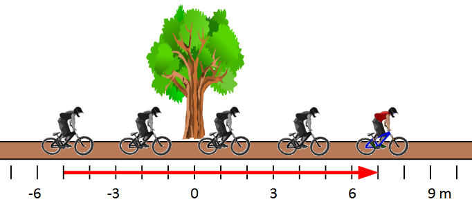

Direction
Motion in a straight line is called one-dimensional (1D) because we only need one coordinate axis to describe an object’s position.

- There are only two possible directions that a vector can have: positive or negative.
Motion in a plane (like a sports field) is two-dimensional (2D) because we need two axes (\(x\) and \(y\)) to describe the motion.
- There are infinitely many possible directions.

- The conventional method of describing a direction is to use an angle.
- The direction parallel to the positive \(x\)-axis is assigned an angle of 0°.
- Angles are measured counter-clockwise from 0°.
- Negative angles can be used to describe directions measured clockwise.
- The negative and positive descriptions of an angle will differ by 360°.
Compass Directions
- Compass directions should always be converted to a conventional angle.
- When compass directions are used, we usually (but not always!) orient the \(x\)-axis from west to east and the \(y\)-axis from south to north, so that east is 0°, north is 90°, west is 180°, and south is 270°.
- When a direction is not exactly along one of the cardinal directions, we start with the direction it is closest to, and then specify the angle to turn.
- For example, a direction of “N 20° E” means: start by facing north (90°) and then turn 20° toward the east. This is equivalent to a direction of 70° using the conventional angle.
- When a direction is exactly halfway between two cardinal directions, the angle can be omitted; “NE” is assumed to mean “N 45° E”.
Magnitude
The size of a vector (i.e. the length of the arrow on a vector diagram) is called the vector’s magnitude.
- When we use a magnitude and a direction to describe a 2D vector, we call this the polar form of the vector.
- For example, \(\Delta\vec{\mathbf{d}} = 12\ \mathrm{m}\ [−14°]\) means a displacement of 12 metres in a direction 14° clockwise from the +\(x\)-direction.